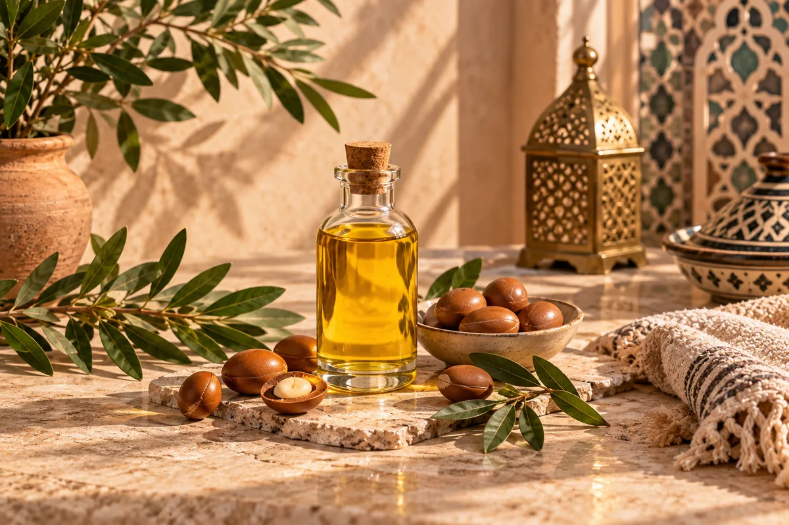
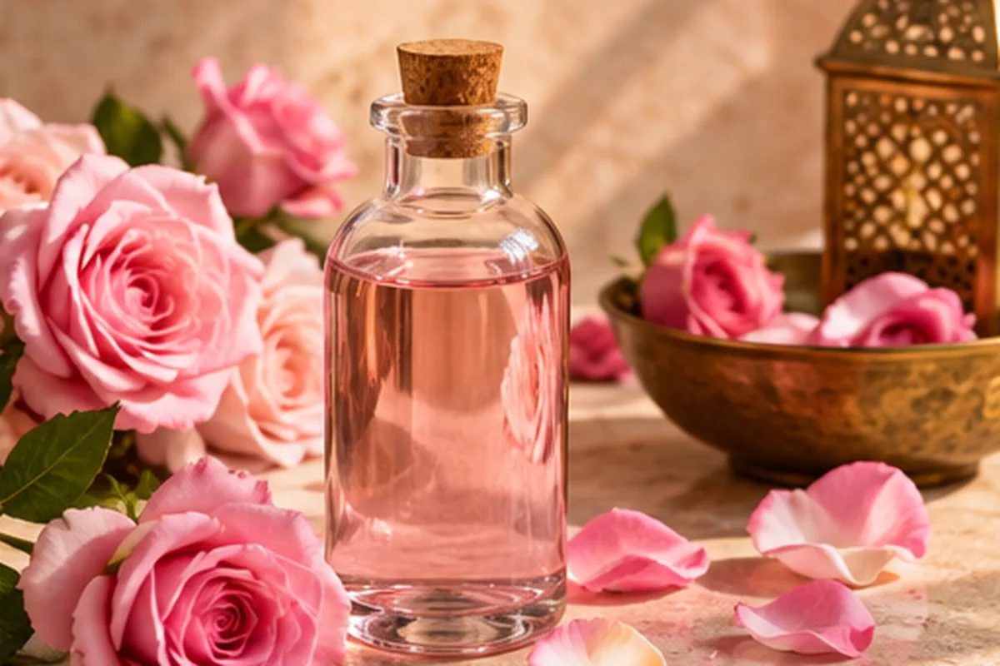
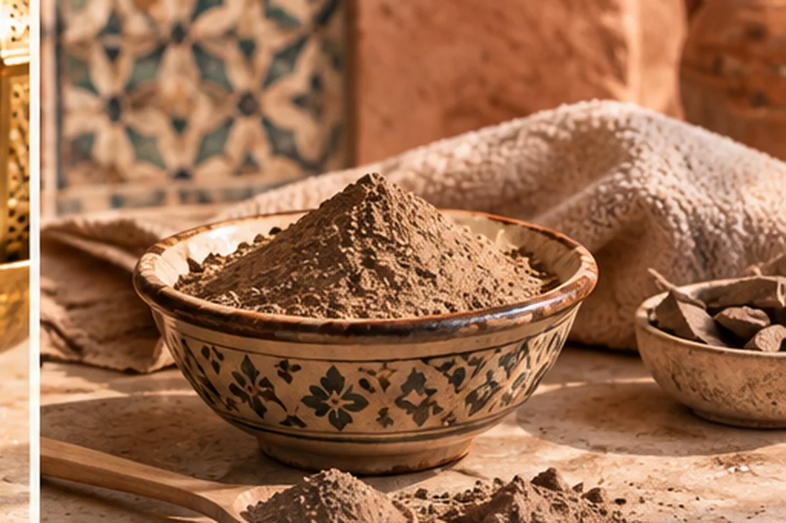
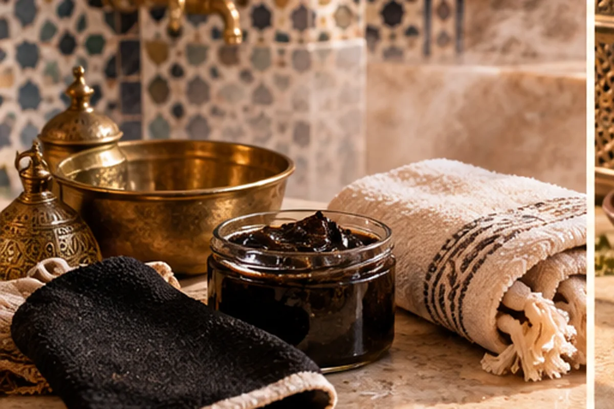
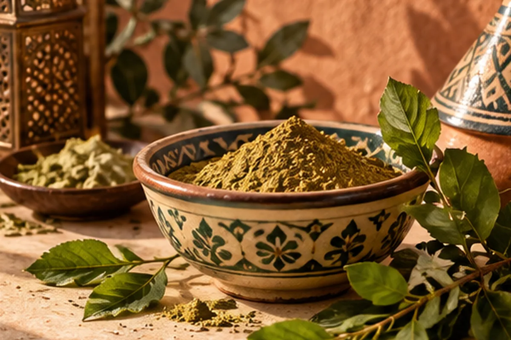
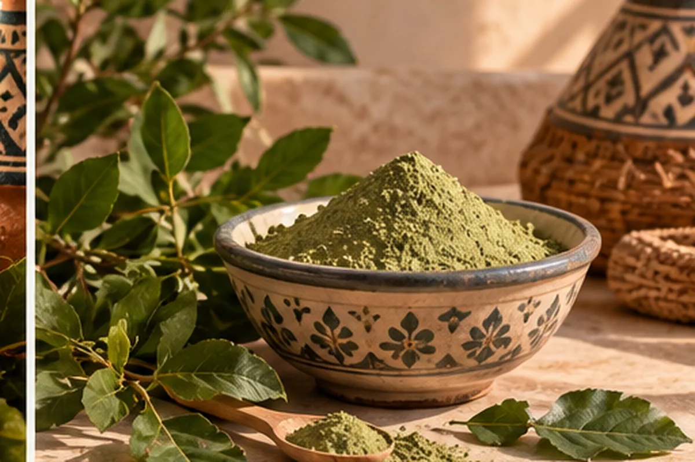

Ancient traditions • Modern self-care
The Moroccan Beauty Ritual
Explore timeless Moroccan beauty traditions, natural ingredients and self-care rituals inspired by the hammam, argan oil, rose water, ghassoul, henna and more.
Explore the ritualsMoroccan self-care
Beauty rituals worth discovering
From nourishing oils to traditional cleansing rituals, discover the ingredients and practices behind Moroccan beauty.

Rose Water Ritual
A fragrant botanical tradition for a simple, refreshing routine.
Discover rose water
Ghassoul Ritual
Discover the mineral-rich Moroccan clay traditionally used for cleansing.
Discover ghassoul
Hammam Ritual
A traditional bathing ritual built around cleansing, steam and exfoliation.
Discover hammam


Natural Moroccan ingredients
Simple ingredients, timeless rituals
Moroccan beauty traditions are built around a small collection of natural ingredients and carefully preserved rituals. Explore what they are, how they are traditionally used and how they fit into a modern self-care routine.
Explore the collectionAbout Moroccan Beauty Rituals
Ancient traditions, thoughtfully explored
Moroccan Beauty Rituals is a curated guide to traditional Moroccan beauty practices and ingredients. Our goal is to make these rituals easier to understand and discover while connecting timeless traditions with modern self-care.
Argan Oil
Traditional Moroccan argan oil beauty and hair-care practices.
Rose Water
Traditional uses of Moroccan rose water in beauty routines.
Ghassoul
Learn about Moroccan rhassoul clay and traditional cleansing.
Hammam
Discover the stages and traditions of the Moroccan hammam.
Henna
Explore Moroccan henna traditions and beauty practices.
Sidr
Discover traditional sidr-based hair-care practices.